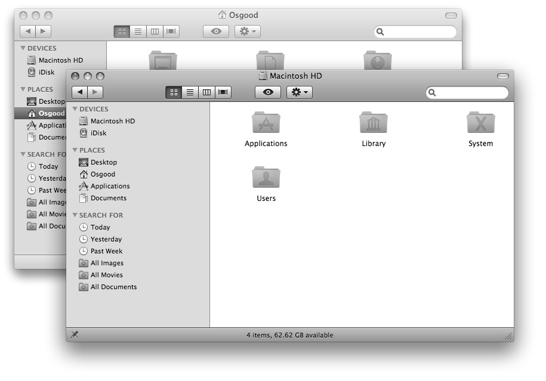
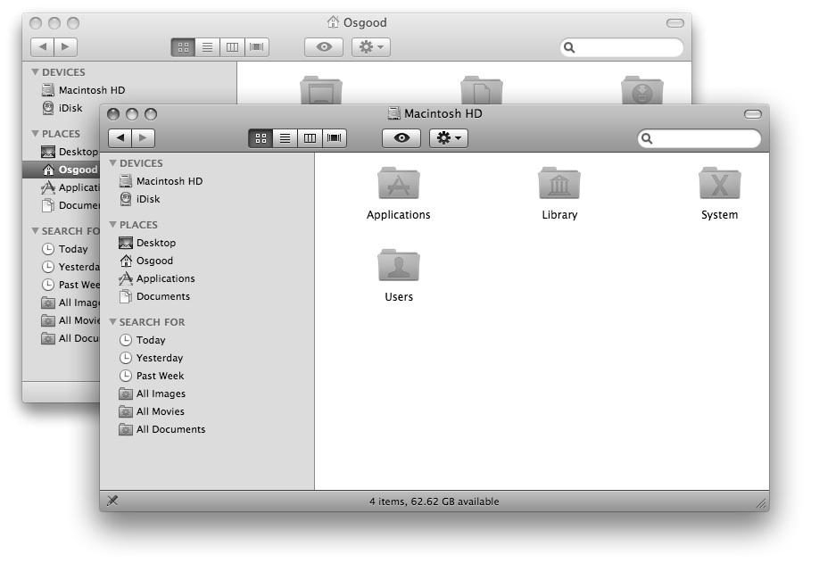
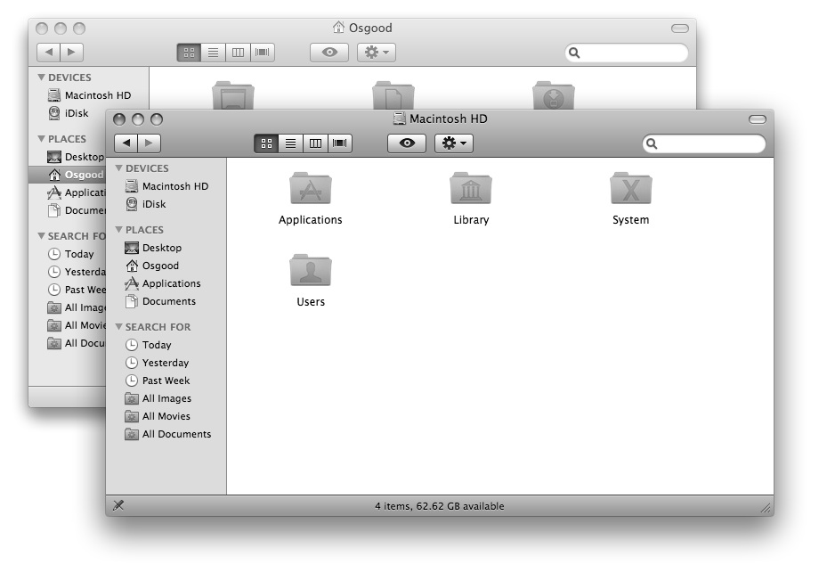

The Sidebar Width Property
Another Finder window property introduced in Mac OS X version 10.4 is the sidebar width property. The value of this property is an integer, indicating the width of the sidebar in pixels, and can be both read and changed.
Try this script that will set the sidebar width to 240 pixels:
 The width of a Finder window’s sidebar can be set using a script.
The width of a Finder window’s sidebar can be set using a script.
tell application "Finder" to set the sidebar width of
Finder window 1 to 240
{kind=link}

The sidebar width of the front Finder window has been set to 240 pixels.
Now, set the width of the sidebar in the second window:
 A script to set the value of the sidebar width property of a Finder window.
A script to set the value of the sidebar width property of a Finder window.
tell application "Finder" to set the sidebar width of
the second Finder window to 240
{kind=link}

Both Finder windows have their sidebar width set to 240.
Now, set the sidebar width to the minimum value for both windows at the same time:
 A script to set the sidebar width of all open Finder windows simultaneously.
A script to set the sidebar width of all open Finder windows simultaneously.
tell application "Finder" to set the sidebar width of
every Finder window to 0
{kind=link}

NOTE: In Mac OS X v10.4 (Tiger), the sidebar could be completely closed by setting the value of the sidebar width to 0. In Mac OS X v10.5 (Leopard), the sidebar has a minimum width of 135. Any value less than 135 will be ignored and 135 used instead.
Note, you can even set the value of the sidebar width property of one window to match another window using a script like this:
tell application "Finder" to set the sidebar width of ¬
Finder window 1 to the sidebar width of Finder window 2